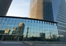
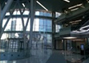
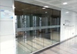
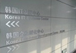
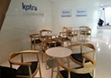
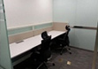
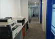
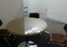
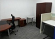
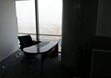

지역별 소개 및 신청


 중국 수출BI 베이징
중국 수출BI 베이징
베이징 수출인큐베이터는 2002년 8월 중국에 진출하는 우리 중소기업의 현지 조기정착과 마케팅 지원을 위해 베이징 한국교민 밀집지구인 왕징 금융지구 포스코센터빌딩 28층에 위치하고 있습니다.
입지여건
-
중국의 정치·경제·문화의 중심지
- 베이징은 중국의 수도로 오랜 역사를 가지고 있는 세계적인 도시이며 화북지방 진출의 출발지
- 철도, 도로, 항공을 망라한 중국 교통의 중심지로 중국 각지로 진출하는데 용이
- WTO가입에 이어 2008년 올림픽 유치를 계기로 내수시장 규모가 계속적으로 증가하고 있는 추세로 베이징 지역의 생활수준이 일정한 수준에 이르러서 소비문화가 다면화되는 경향
- 최근 5년간 전국 평균을 훨씬 상회하는 평균 7%의 경제성장률을 기록
1인당 GDP는 : 약 15,000 USD(’14년, 중국 내 4위) - 주요산업
자동차, 화공, 의약, 유기화학, 방직, 야금, 기계, 공예미술, 문방용품 등 최근에는 하이테크 산업, 생활소비재 유통, 금융, 지식서비스 산업이 빠른 속도로 발전하고 있는 추세
진출 유망 사업 분야
-
자동차 제조업 및 관련 부품 제조업
중국은 세계 4위의 자동차 생산국으로 베이징 지역에는 자동차 제조업 및 관련 부품업이 발전하고 있음
-
하이테크 전자 관련 산업
- 최근 북경시가 기술중심 하이테크 지구인 중관촌(中關村)을 중심으로 하이테크 산업의 기술개발과 창업을 육성하고 있음
- 전기전자, 기계, 화공, 인쇄 등 기술집약적 산업
-
금융 및 보험업 관련 산업
- 최근 세계적인 금융 및 보험사가 베이징 지역으로 진출 중임
- 금융 및 보험과 관련된 IT 산업 및 관련 서비스업
-
서비스업
- 소득수준의 향상으로 3차 산업이 성장하고 있는 추세임
- 유통, 요식서비스, 물류업 등 사회서비스 분야 산업
입주면적/주요시설
- 총면적 976.64㎡
- 입주업체 사무실 약 11㎡~15㎡ 21실
- 회의실(15석 규모) 소회의실(4명) 2개실, 중회의실(15명) 1개실
- 중소기업 수출사랑방 2실
- 기타 공용실 한국 우수상품 전시공간, 간이상담실, 사무기기, 공동형 창고 등
입주부담금
-
수출인큐베이터
- 입주보증금 : 500만원
- 월 임차료(1년차 기준) : 30만원 내외
- 실비부담 : 전기, 팩스사용료 등 관리비는 개별 실비 부담 (월 $100 수준) - 공유오피스 : 무료
찾아오시는 길
-
택시
- 수도공항에서 BI 사무실까지 60위안, 약 15-20분 소요
- 공항에서 왕징까지 거리가 가까운 관계로 대다수의 택시기사들이 불친절함에 따라,
가급적 공항버스(왕징행, 25위안)를 타시고 지하철 왕징역에서 하차후 택시를 타시는게 낫습니다
-
도보(徒步)
- 望京SOHO 맞은편 올리브(融科橄榄城) 國風北京 사잇길로 직진
→ 宏泰東街(미개통)를 건너 50미터 전방에서 좌회전, 전방 200미터 앞 왼편에 위치
- 望京SOHO 맞은편 올리브(融科橄榄城) 國風北京 사잇길로 직진
-
차량(車輛)
- 望京SOHO 맞은편 올리브(融科橄榄城) 國風北京 사잇길로 직진
→ 宏泰東街(미개통)길에서 우회전 → 300미터 전방에서 좌회전
→ 保利國際廣場 공사장 출입구 진입후 전방 100미터에서 좌회전, 50미터후 우회전
→ 전방 200미터 앞 왼편에 위치
- 望京SOHO 맞은편 올리브(融科橄榄城) 國風北京 사잇길로 직진
시설사진

건물입구
1층로비
인큐베이터입구
인큐베이터현판
입구 사랑방
열린 사랑방
복도
소회의실(2개실)
2인사무실
1인사무실
위치
 주소|
中國 北京市 朝阳区大望京科技商務園區 宏泰東街 浦項中心 A樓 28層
주소|
中國 北京市 朝阳区大望京科技商務園區 宏泰東街 浦項中心 A樓 28層
담당자
- 도준형 소장
- 전화: +86-10-6410-6162 (내선 40)
- 팩스: +86-10-6505-2310
- 이메일: thoga@kosmes.or.kr